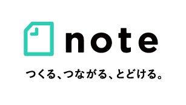
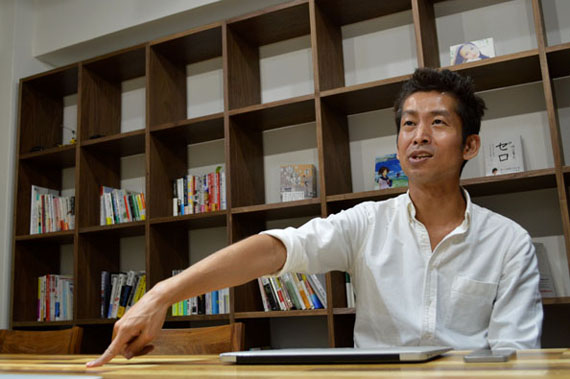

デジタルコンテンツ業界の注目起業がオフショア開発を選んだ理由とは？
ピースオブケイクが切り開くコンテンツの未来
株式会社ピースオブケイク・CEO加藤氏、CTO原永氏インタビュー

加藤：noteもcakesも最終的にやろうとしていることは実はいっしょなんです。cakesが雑誌のようにコンテンツやクリエイターの集合をまとまりで見せているのに対して、noteはそれをバラバラにしてクリエイターごとに見せています。cakesが「雑誌の再発明」だとしたら、noteは「本の再発明」。要するに個人メディアなんですよね。最終的にはnoteは個人メディアと思われなくなるんですが、まずスタートラインはそこかと思っています。
noteはTwitterと同じようにURLに自分のIDがあって、それ込みで自分のトップページがあります。紙のメディアにおいては、「雑誌と書籍」が非常に基本的な組み合わせで、ネットにおいてもそういう新しい組み合わせが必要だと思っていました。しかし、ネットには個人メディアにあたるものがなかった。
加藤：紙の本と違い、電子書籍の解決すべき課題は３つあります。① 先ほどのマーケティングの問題（プラットフォームにマーケティング情報を握られていて、手出しできない）、② デジタルなのにインタラクティブじゃないこと、③ オープンでなく閉じていること。この３つの課題を解決させようとして作ったものがnote です。個人メディアでオープンでインタラクティブ、ビジネスもできて、クリエイターのファンとつながることができる、という場所を考えるとこうなるかな、という思いで作っています。

2014年の4月にローンチ。アーティスト、作家、漫画家など、プロ・アマ問わず既に多くのクリエイターが使っている。今後こういう場所で収入を得て「ご飯を食べていく」クリエイターを増やしたい、という想いで運営している。
加藤：noteには「マガジン」というコンテンツを束ねる機能がつきました。これはコンテンツの未来を広げられる仕組みなのではと思っています。要するに、「小さなメディアをつくる」機能なんですよね。めちゃくちゃ簡単にメディアが作れてしまう。テキストを束ねれば本になるし、音楽を束ねて売ればアルバムにもなります。読者はフォローできるので、月ごとに出せば雑誌にもなるし、継続課金にしたらファンクラブになります。そのうち、クラウドファンディングの機能も取り入れようと考えています。
最終的には、ここでコラボレーションのマガジンが立ち上げられるようにしたいなと思っていて、複数の人でこのメディアを運営することができるようにして、売れたらお金を分配できるような仕組みにしていく予定です。これってcakesでやってることなんですよね。要するに、noteが目指ししていることは、オープンなcakesなんですよ。そうすると最後、山の両側からトンネルを掘り進むような感じで、ど真ん中でひとつになるのかなと思っています。
加藤：まず最初の予想とぜんぜん違っていたのは、ミュージシャンの方からの利用と問い合わせが増えていることですね。僕らは出版の目線で始めているんですけど、開発の過程で、テキストと画像があるなら音をやらない理由はないな、ということで音も付けました。
あとミュージシャンに限らず、作家とか漫画家さんとかプロの参入が多くあったのも驚きました。cakes の時は、依頼してまわるんですけど、それをみなさんがどんどん勝手にはじめてくださっています。そうしようと思ってやってきたんですけど、予想以上にやってくださっているというのが、最初びっくりしたことでもありますね。ありがたい話です。
加藤：実は僕と同じ歳で付き合い長い津田大介くんから、noteをリリースした日の夜12時過ぎくらいに携帯に電話がきて、「これミュージシャンも使えるのかな？」と聞かれたんですね。「使えるっていうか、そのためにあるようなサービスなんだよね」と話をしたら、「今ね、くるりの岸田くんと飲んでいて、今度独立する予定でファンクラブとかどうしようかと思っていたところで、今度紹介してもいい？」と言われたんです。その後、数日以内くらいに会って、やりましょう！という話になりました。津田さんの紹介がきっかけです。
加藤：ネットでファンとコミュニケーションしていくことになると、たぶん今までとやり方が色々変わってくるんじゃないかと思うんですよね。音楽の話で言うと、今まではCDというガチガチに作りこんだ、Photoshopでたくさんお化粧を重ねたような写真ってあるじゃないですか、そういうものですよね、CDの音楽っていうのは。それとライブ。この二者択一だったんですよね。
しかし、その間にも音楽っていっぱいあるんですよ。まず詩をどんな想いで書いたのかという話もあるし、あと音もね、一番最初ってiPhoneで録音したりするわけですよ。そのファーストの音だったり、あるいは、バンドがはじめてスタジオに入って録音したもの、あるいは、すでに売ってる楽曲をうちでリラックスしながらフォークギター１本で歌いながら弾いたものなど、実はいろんな音があるんですね。それをファンに伝えるというのは、ものすごく価値があると思うんですよ。今まではメディアの特性で、CDならこう、ライブでやるならこう、という大きい枠しかなかく、それはそのままでいいんですけど、それ以外の部分にも、大きな広がりのあるストーリーがあり、それらを共有することは、ミュージシャンにとってもファンにとってもいいことなんじゃないかって思っているです。
加藤：これは音楽に限ったことではなく、今度、芥川賞作家の平野啓一郎さんがnoteを始めてくださるのですが、朗読を載せようかなとかおっしゃっていて、作家自身が自作を朗読するってかなり価値があることだと思います。どこをどう大事にして読むのかを聴けるのは相当面白いんですよね。また、平野さんは三島由紀夫の影響を受けた方なんですけど、彼が三島由紀夫を朗読するなんていうのも面白いはず。全部は朗読できないので、大好きなシーンを選ぶことになりますが、それ自体がキュレーションになってくるわけです。そういうメディアのコミュニケーション、読者との関係性って今までなかったし、できなかったんですよね。これができるようになるっていうのは、意味のあることだと思うんですよね。
加藤：インターネットの時代というのは綺麗ごとではなく、全員がクリエイターだと思うんですよね。人気とか面白さとかいろんな差があるんですけど。
加藤：noteには、「ここで何を売っていいのかわからない」という人が結構いるんです。別に売らなくてもいいと思うんですけど、全員が売れるコンテンツを１個はできると思っています。みんなね、今までで一番自分が恥ずかしかった話を書けばいいと思うんですよ。これは絶対売れるはずです。「書けないレベル」のやつじゃないとダメですよ。

「インターネットの時代というのは綺麗ごとではなく、全員がクリエイターだと思うんですよね。」
でも、プロのクリエイターっていうのはそういうことをしているんですよね。売るということはクリエイティビティを引き出す意味合いもあって、プロは商売だから仕方なく、すごく恥ずかしかった話とか、自分の中の醜い心に踏み込んで唸りながら毎日書いて出してるわけですよ。自分の根本のところに踏み込んでやる、クリエイティブワークってそういうものだと思うんですよね。
芥川賞作家の平野啓一郎さんのnote。自身の作品や芥川龍之介の作品を朗読したコンテンツを公開している。
ベトナムのオフショア開発の視察、システム開発に関するご質問、
お仕事のご相談、お見積の依頼など、お気軽にお問い合わせください。